3. sınıfta üç basamaklı doğal sayılarla toplama işlemi konusunu öğrenmiştik Şimdi de dört basamaklı sayılarla toplama işlemini öğreneceğiz.
Eldesiz Toplama İşlemi
Toplama işlemi yaparken önce birler basamağındaki sayılar toplanır. Sonra onlar basamağındaki sayılar toplanır. Daha sonra yüzler basamağındaki sayılar toplanır. En sonunda da binler basamağındaki sayılar toplanır.
Örnek:
2160 ve 1825 sayılarını toplarken izlenen aşamaları inceleyelim.
Sayıları toplarken basamakları alt alta yazmaya dikkat edelim
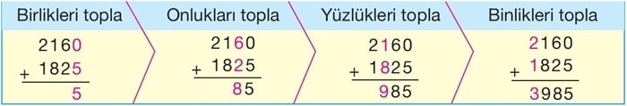
2160 + 1825 = 3985
Eldeli Toplama İşlemi
Eldeli toplama işlemi yaparken eldesiz toplama işlemi gibi önce birlikler, sonra onluklar, daha sonra yüzlükler ve en sonunda da binlikler toplanır. Ancak eldelere dikkat edilir.
Örnek:
4818, 1586 ve 2647 sayılarını toplarken izlenen aşamaları inceleyelim.
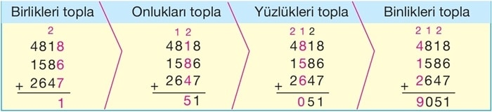
4818 + 1586 + 2647 = 9051
Toplananların Yer Değiştirmesi
Aşağıdaki toplama işlemlerini inceleyelim.
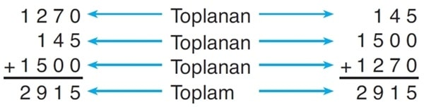
Toplama işleminde toplananların yerinin değişmesi sonucu değiştirmez.
Örnek:
K + 17 + 25 = 25 + 42 + 17 olduğuna göre, K yerine yazılabilecek sayının kaç olduğunu bulalım.
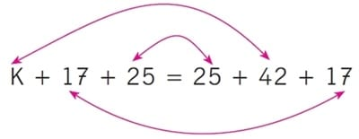
Buna göre, K yerine yazılabilecek sayı 42’dir.
Toplama İşleminde Verilmeyen Rakamı Bulma
Örnek:
Aşağıda verilen toplama işlemine göre A + B + C toplamının kaç olduğunu bulalım.
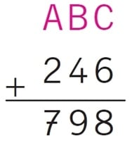
Verilen toplama işleminde birler basamağındaki rakamların toplamı 8’dir.
C + 6 = 8 ise, C = 2’dir.
Onlar basamağındaki rakamların toplamı 9’dur.
B + 4 = 9 ise, B = 5’tir.
Yüzler basamağındaki rakamların toplamı 7’dir.
A + 2 = 7 ise, A = 5’tir.
Buna göre :
A + B + C = 5 + 5 + 2 = 12
Doğal Sayılarla Çıkarma İşlemi
3. sınıfta üç basamaklı doğal sayılarla çıkarma işlemini öğrenmiştik. Şimdi de dört basamaklı doğal sayılarla çıkarma işlemini öğrenelim.
Çıkarma işlemi yaparken önce birler basamağındaki rakamların farkı bulunur.
Sonra onlar basamağındaki rakamların farkı bulunur. Daha sonra yüzler basamağındaki rakamların farkı bulunur. En sonunda da binler basamağındaki rakamların farkı bulunur.
Atatürk 1881’de doğdu, 1923’te Türkiye
Cumhuriyeti’nin ilk cumhurbaşkanı oldu. Atatürk’ün kaç yaşında cumhurbaşkanı olduğunu bulalım.
Sayıları çıkarırken basamakları alt alta yazmaya dikkat edelim.
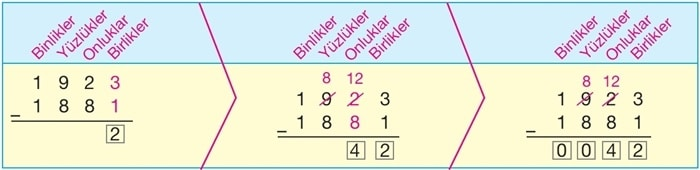
Atatürk 42 yaşında cumhurbaşkanı olmuştur
Çıkarma İşleminde Verilmeyen Eksileni Bulma
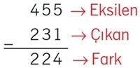
Verilen bu işlemde çıkan sayı ile farkı toplayalım. 224 + 231 = 455’tir. Yani, çıkan sayı ile farkın toplamı eksilen sayıya eşittir.
Örnek:
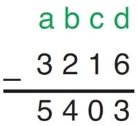işleminde verilmeyen eksileni bulalım.
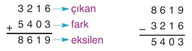
O hâlde eksilen 8619 olur.
Çıkarma İşleminde Verilmeyen Çıkanı Bulma
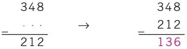
Eksilen ve farkın verildiği bir çıkarma işleminde çıkan sayıyı bulmak için eksilen sayıdan farkı çıkarırız.
Örnek:
işleminde verilmeyen çıkanı bulalım.
Çıkan sayıyı bulmak için eksilen sayıdan farkı çıkarırız.
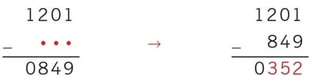
Buna göre, çıkan sayı 352‘dir.
Doğal Sayılarla Çarpma İşlemi
3. Sınıfta üç basamaklı sayılar ile bir basamaklı sayıların çarpımını öğrenmiştik. Şimdi de üç basamaklı sayılar ile iki basamaklı sayıların çarpımını öğreneceğiz.
Örnek:
Fikret, yabancı bir ülkede çalışan dayısını ziyarete giderken saatte 724 km hızla uçan bir uçakla 8 saat yolculuk yapıyor. Fikret’in gittiği ülkenin ülkemize uzaklığı kaç km’dir? Birlikte bulalım.
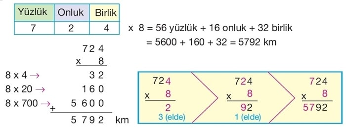
* 8 birliği 4 ile çarptık. 32‘nin 2 birliğini yazdık. Elde 3 onluk var.
* 8 birliği 2 onluk ile çarptık. 16 onluk + 3 onluk(elde) = 19 onluk. 19 onluğun 9 onluğunu yazdık. Elde 1 yüzlük var.
* 8 birliği 7 yüzlük ile çarptık. 56 yüzlük + 1 yüzlük(elde) = 57 yüzlük
Örnek:
Bir kişinin dakikada 76 kez atan kalbi, 62 dakikada kaç kez atar? Birlikte bulalım.
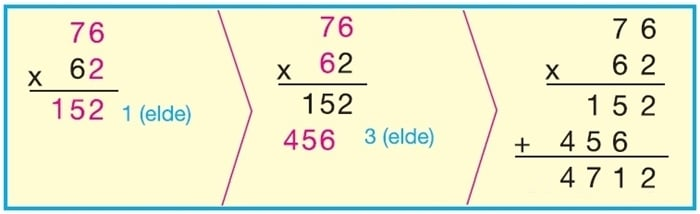
* 2 birliği 76 sayısıyla çarptık.
* 6 onluk 76 sayısıyla çarptık.
* 76 sayısının 2 birlik ve 6 onluk ile çarpılmasından bulunan sayıları topladık.
Bu kişinin kalbi 62 dakikada 4712 kez atar.
0 ve 1 İle Çarpma
* Bir doğal sayının 0 ile çarpımının sonucu 0’dır.
Örnek:
9 x 0 = 0, 48 x 0 = 0, 9657 x 0 = 0
* Bir doğal sayının 1 ile çarpımının sonucu yine sayının kendi değerini verir.
Örnek:
9 x 1 = 9, 48 x 1 = 48, 9657 x 1 = 9657
Çarpanların Yer Değişmesi
Bir kütüphanenin çocuk kitapları bölümünde 6 dolap vardır. Her dolapta 12 raf, her rafta da 9 kitap bulunmaktadır.
Bu kütüphanede kaç çocuk kitabı olduğunu iki arkadaş farklı şekilde buldu:
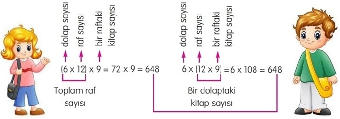
Her iki işlemde de sonuç aynıdır.
Doğal Sayılarla Bölme İşlemi
3. sınıfta iki basamaklı sayıların bir basamaklı sayılara bölümünü öğrenmiştik. Şimdi de dört basamaklı sayıların bölümünü öğreneceğiz.
Mihriban Hanım, 85 cevizi 6 çocuğa eşit bir şekilde paylaştırmak istiyor. Her çocuğa
kaç ceviz düşer ve geriye kaç ceviz kalır, bulalım.
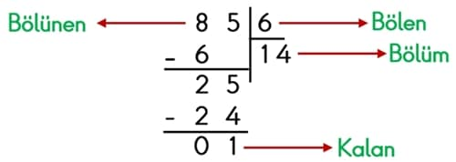
Bir bölme işleminde bölünen, bölen, bölüm ve kalan terimleri bulunur.
Dört Basamaklı Sayılarla Bölme İşlemi
Örnek:Arif Bey, 2475 TL olan bir bilgisayarı 9 taksitle satın almıştır. Bu göre Arif Bey’in her ay ödeyeceği para miktarını bulalım.
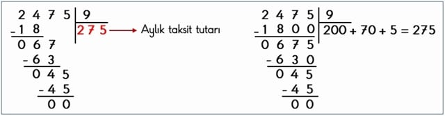
Bölme işleminin doğruluğunu kontrol edelim.
Bölen x Bölüm = 9 x 275 = 2475
Bölme işlemimiz doğrudur.
Bu ünitemizde Doğal Sayılarda İşlemeler konusunu detaylı bir şekilde öğrendik artık 3.Üniteye geçebiliriz.